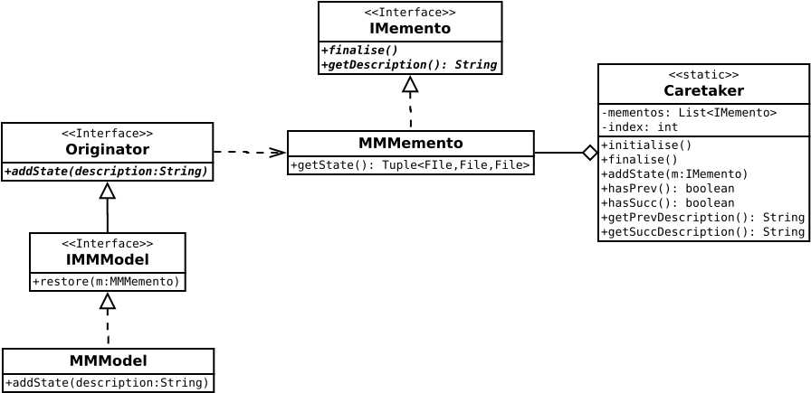

Package au.edu.anu.twapps.mm.undo
package au.edu.anu.twapps.mm.undo
Undo/Redo system for ModelMaker.
The state of ModelMaker is saved just before an edit in enacted. The state is saved in three sequentially numbered files: the configuration graph (stateA<n>.utg), the layout graph (stateB<n>.utg) and the ModelMaker preferences (stateA<n>.xml) to capture the current state of user interface controls).
All files are deleted when a project is closed.
Modified from: Gamma, E., Helm, R., Johnson, R., Johnson, R.E. and Vlissides, J., 1995. Design patterns: elements of reusable object-oriented software. Pearson Deutschland GmbH.

- Author:
- Ian Davies - 05 Apl 2022
-
Interface Summary
-
Class Summary